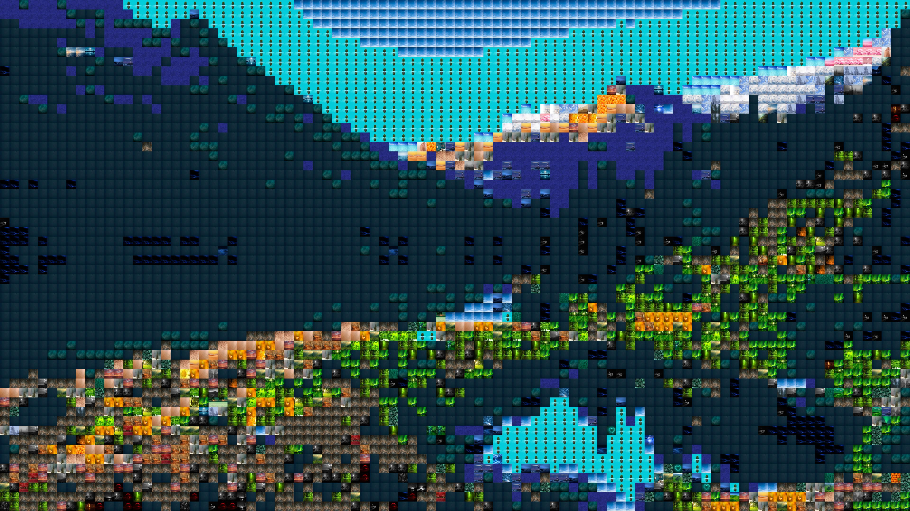

Mosaico de Imagenes
Mosaico de imágenes es un programa diseñado para convertir imagenes jpg o png en mosaicos de imagenes más pequeñas. Tomemos, por ejemplo,
la siguiente:
El programa lo que hará es "recortar" la imagen en pequeños cuadrados de N x N (N definido por el usuario) para posteriormente analizar el
color de dichas secciones. Previamente, se cargaran en memoria la información de colores de todas las imágenes del repositorio y se procederá
a comparar cada cuadrado con los colores del repositorio, quedando elegida la imagen que mejor se adapte. Finalmente se reemplaza cada sección
con la imagen repositorio óptima, pero resizeada al tamaño N x N. Veamos como queda:

¿No lo ves? Te invito a que puedas alejarte de la pantalla y visualizar la imagen a distancia. Ahora deberías ver que las imágenes son similares.
Por supuesto, los resultados pueden mejorar en función de la cantidad y variedad de imágenes en tu repositorio y el tamaño de los cuadrados.
VOLVER